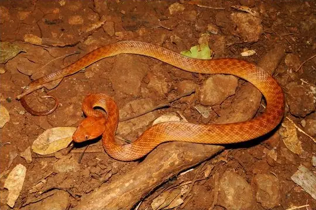
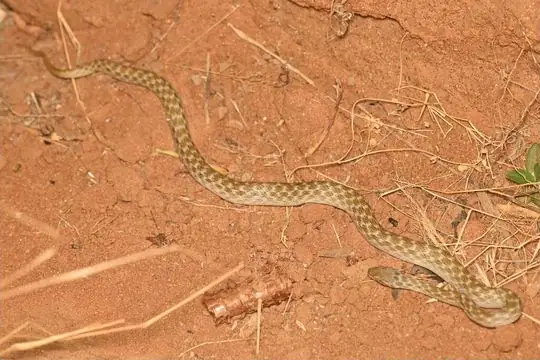
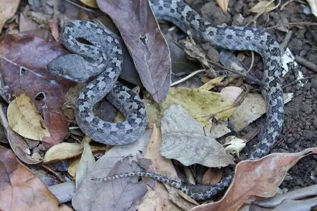
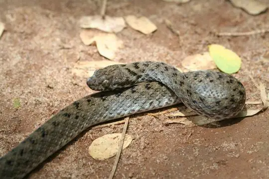
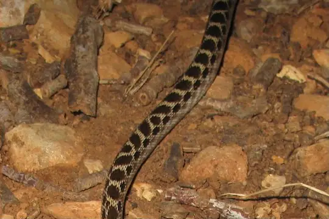

Madagascarophis
The genus Madagascarophis (family Pseudoxyrhophiidae) has 5 species in SnakeList (none venomous), recorded in 1 country.
- 5species
- 5non-venomous
- 1country
About the genus
A genus of the family Pseudoxyrhophiidae (Malagasy snakes and allies).
Species
Showing 5 species

Antsiranana Cat SnakeMadagascarophis fuchsi
Cat-eyed Snake (meridionalis)Madagascarophis meridionalis
Ghost SnakeMadagascarophis lolo
Madagascar Night SnakeMadagascarophis colubrinus
Ocellated Cat SnakeMadagascarophis ocellatus
No snakes in Madagascarophis match.
About the genus Madagascarophis
- Family: Pseudoxyrhophiidae.
- Recorded in: Madagascar.